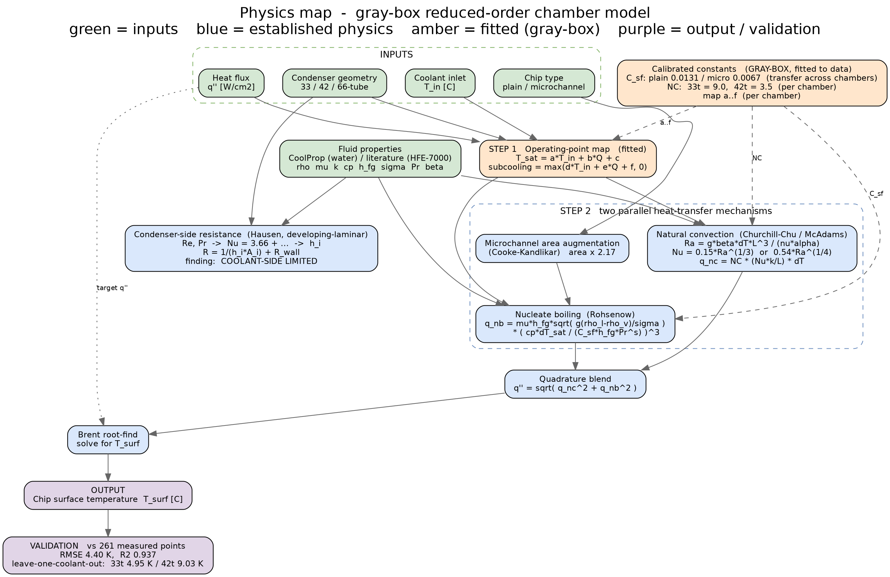
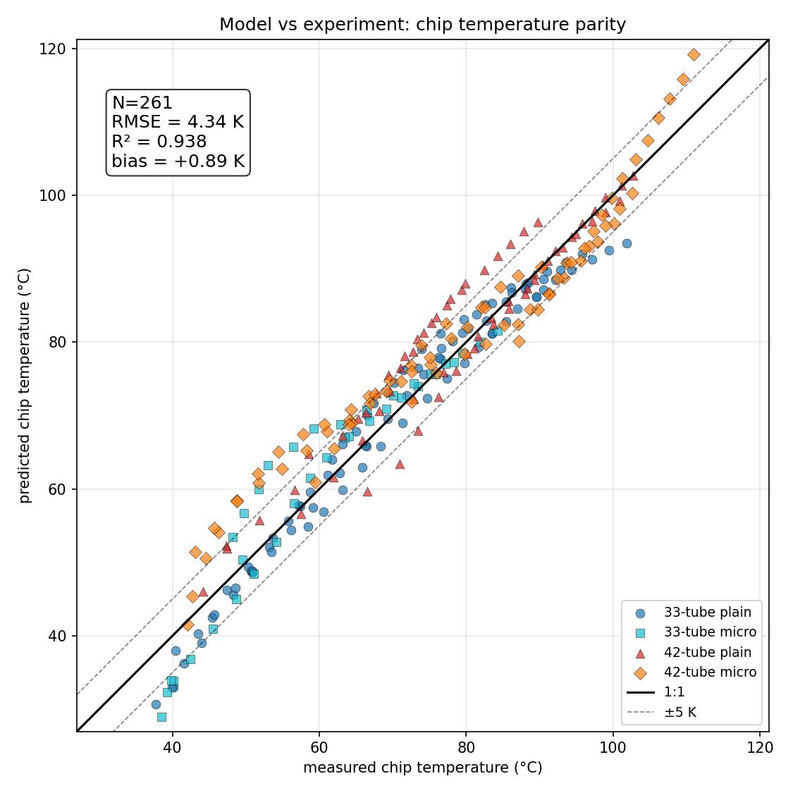
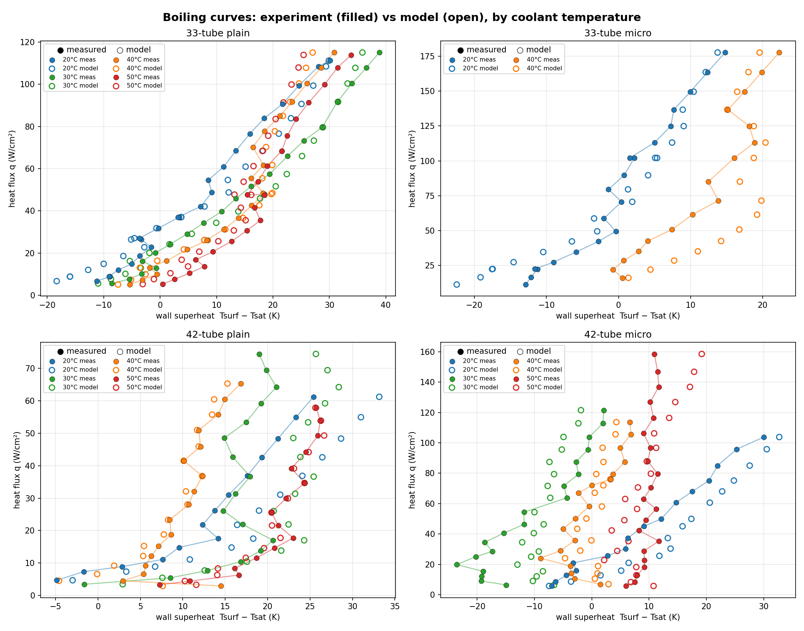
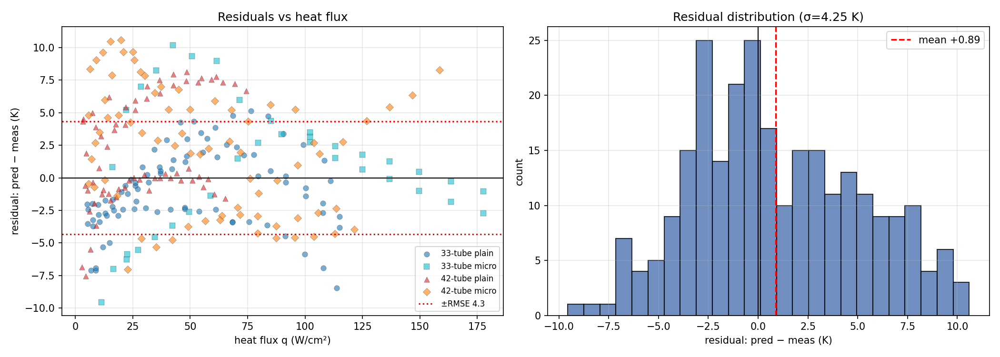

74%
POINTS WITHIN 5 K
Experiments tell you what one chamber did; a validated model tells you what the next one will do. This is a gray-box thermal network of the sealed chamber, physics where the physics is known and calibrated closures where it is not, that predicts chip temperature from geometry, coolant condition, and heat flux. Its worth is measured the only way that counts: against 261 experimental points it must explain.
The chamber reduces to a thermal network from chip to facility coolant: conduction through the substrate, nucleate boiling at the enhanced surface through a calibrated Rohsenow-family closure with surface constants fit per surface type, saturation conditions set by the sealed-chamber pressure coupling, and condensation on the finned tube bundle to the coolant. The gray-box philosophy is strict about which parameters are physics and which are fit: fluid properties, geometry, and energy balances are physics; the handful of empirical constants are calibrated on a subset of the data and then frozen. The map below is the whole model on one page.

The test set is every steady-state point from two chamber generations and two surface types, 261 in all, spanning 33-tube and 42-tube condensers, plain and microchannel substrates, and coolant temperatures from 20 to 50 °C. Overall: RMSE 4.34 K, MAE 3.48 K, R² 0.938, bias +0.89 K, with 74% of predictions within 5 K of measurement.

| Configuration | N | RMSE (K) | Bias (K) | R² | Within 5 K |
|---|---|---|---|---|---|
| 33-tube, plain | 87 | 3.14 | -0.99 | 0.964 | 91% |
| 33-tube, microchannel | 36 | 4.82 | +0.88 | 0.867 | 67% |
| 42-tube, plain | 64 | 4.42 | +2.00 | 0.900 | 66% |
| 42-tube, microchannel | 74 | 5.17 | +2.16 | 0.927 | 65% |


These are in-sample statistics on the validated configurations; the model's 66-tube and HFE-7000 outputs are forecasts with no data behind them yet, and are labeled that way everywhere they appear. Leave-one-coolant-out cross-validation showed the 33-tube generation generalizes better than the 42-tube, which is written into the manuscript rather than smoothed over. The full write-up, Part I of the two-paper set, is hosted here as a preprint.